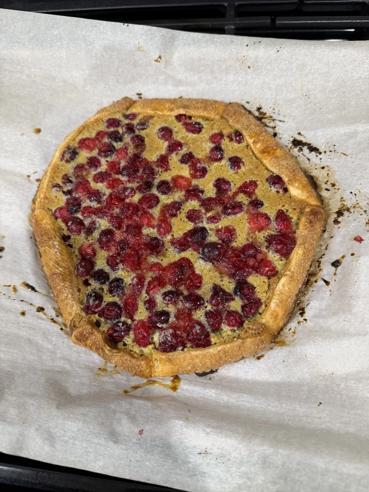

Welcome to the cookbook. Starting with two rustic galettes baked on an ordinary baking sheet—no tart pan required.
🌍 What should I bake next?Browse 245 recipes & ideas · Search · Filter · Save your wishlistTwo-Jam Berry Galette

A flaky, folded pastry filled with Bonne Maman raspberry and Four Fruits preserves.
Pastry — for one 12-inch circle
Filling & finishing
Method
- Make dough: Combine flour, sugar, and salt. Rub in cold butter, leaving some pea-sized pieces. Mix in 55 g cold water, adding more by 5 g only until dough holds together when squeezed.
- Chill: Shape into a disc and refrigerate, wrapped, for 45 minutes.
- Roll: Preheat a conventional oven to 375°F (190°C). Roll dough on parchment to a roughly 12-inch (30 cm) circle about ⅛ inch (3 mm) thick. Place parchment on a baking sheet.
- Fill: Spread 70 g of each jam over half the center area, leaving a 2-inch (5 cm) border all around. Fold and pleat the border over the filling; pinch gaps closed.
- Chill and finish: Refrigerate assembled galette for 15 minutes. Brush exposed pastry with 10 g milk; scatter 8 g sugar over crust.
- Bake: Bake on the middle rack 30–40 minutes, until the pastry is deeply golden and jam gently bubbles. Cool at least 45 minutes before cutting.
Practice goal: Check the underside: it should be golden, crisp, and fully baked. If pale, bake a little longer on a lower rack while watching the top.
Cranberry–Pistachio Frangipane Galette

Your free-form pistachio frangipane galette, using supermarket pie crust, tart-sweet cranberries, egg-washed edges and roasted chopped pistachios. Updated with the adjustments from your first bake.
Crust & baking supplies
Pistachio frangipane (about 243 g)
Cranberries
Egg wash & final garnish
Shopping totals: 2 large eggs; 103 g sugar; 75 g pistachios (60 g raw and 15 g roasted). You can buy 75 g raw pistachios and roast just 15 g for the topping.
Method
- Prepare the pistachios: Pulse 60 g raw shelled pistachios until finely ground like coarse almond flour. Avoid blending into pistachio butter. Set aside 15 g roasted pistachios for the garnish; if starting with raw, roast that portion at 325°F (165°C) for 5–8 minutes, cool and chop.
- Prepare the crust: Place a refrigerated rolled pie crust on parchment on a baking sheet. Unroll and, if possible, gently roll to a roughly 12-inch (30 cm) circle. Keep cold.
- Make the frangipane: Cream 50 g softened butter with 50 g sugar. Beat in 1 large egg and ¾ tsp vanilla. Stir in 60 g ground raw pistachios, 20 g almond flour and 10 g all-purpose flour until thick and spreadable.
- Prepare cranberries: Toss 120 g fresh or frozen cranberries with 45 g sugar. No pre-cooking needed; do not thaw frozen cranberries.
- Fill & fold: Spread the pistachio frangipane over the center of the crust, keeping a 2-inch (5 cm) border. Distribute sugared cranberries on top. Fold and pleat the crust inward, pinching gaps shut.
- Chill: Refrigerate the assembled galette for 15 minutes. Preheat a conventional oven to 375°F (190°C).
- Egg wash: Beat the second egg with 1 tsp water. Lightly brush only the exposed crust and sprinkle with 8 g sugar.
- Bake: Bake on the middle rack at 375°F (190°C), approximately 35–45 minutes. Since egg wash browns more quickly, check the crust at 25–30 minutes and then every 5 minutes. The frangipane should be puffed and set (not wet or liquid), cranberries softened and some burst, and the underside of the crust golden. If the crust becomes dark before the center sets, shield edges loosely with foil and continue.
- Cool & finish: Cool for at least 45 minutes, then sprinkle the roasted, roughly chopped 15 g pistachios on top.
Store-bought crust sizing: These full filling quantities were developed for a 12-inch pastry circle. If your ready-made sheet remains closer to 11 inches, use approximately 75–80% of the prepared frangipane and cranberries to prevent overflow. Bake any excess egg-containing frangipane separately until set.
Recipe journal: Photo is from your actual bake. The sugar amount and egg wash reflect our latest recipe adjustments. Your exact oven duration and flavor assessment are not yet recorded; 35–45 minutes remains an estimate, so judge doneness visually.